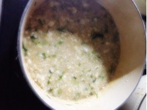

| 2013/01 08 Tue | 338回目*marika |
学校始まったー！
また毎朝早く起きないと行けない。
がんばるっ
その後メンバー、スタッフさんと
乃木神社にお参りしました。
おみくじは小吉だった

いいのか悪いのか。
......
今日は1月7日。
七草粥を食べる日。

まりっ会のみなさん聞いて？！
...作りました。
...私が！
が、頑張ったろおおおお

伊藤家はいつも玄米を使っているので
できあがりはお粥にしては
ちょっと硬かった。ので、
お母さんはまた煮込みましたが...
美味しかった。それなりに！
はっあー！
ねねに自慢しよ←
みなさんは七草粥食べましたか？
*********
 今欲しい物は何ですか!?
今欲しい物は何ですか!?
 んー...特にこれというのはないけど
んー...特にこれというのはないけど
ハンドメイドのブローチ！
ブローチとか集めてるから

ハンドメイドっていうなら自分で
作れやって話だけどね笑
美容グッズも気になってる。
新規まりっ会の会員は
まず何をすればよいですか?
まりか推しでいてくださるだけで
もうとっても嬉しいです

まじめに、たまにゆるーくね！
まりっ会に入会してくれて
ありがとう。
家ではよく、こんな
ルームウェアとか着るの？？
...え！
......え、、
着てない...！
子供扱いされたらやっぱり
イラ立ちますか？
慣れてる

慣れてる。もん...
子供じゃないいいうあああ！！！

いや、でも大人っぽくきれいに
なりたいって本気で思ってるよ。うん
**********
選抜発表の記事、
コメントありがとうございました。
全部読みました。
...ごめんなさい。
放送を見た直後に
思ったことそのまま書こうとしたけど
ぐちゃぐちゃしちゃって
強がった文しか書けませんでした。
みなさんと喜び合いたい気持ち
だけではなく、
気持ちを共有することって
大切ですよね。
だって一緒に坂を登ってるんだもの！
強がってる私も
弱気な私も
受け入れてくださるみなさんが
本当にだいすきです。
本当にありがとう。
キリッ！
シャープに見える！わあい

まりか
コメント(310)
2013/01/08 22:36